1. Benzer Üçgenler
Karşılıklı açıları eş ve karşılıklı kenarları orantılı olan üçgenlere benzer üçgenler denir.
| 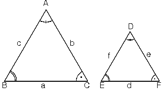 |
ABC ve DEF üçgenleri için;
| 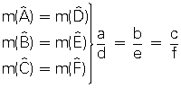 | oranı yazılır |
Buradan ABC üçgeni ile DEF üçgeni benzerdir denir ve
ABC ~ DEF biçiminde gösterilir.
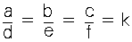 eşitliğinde verilen k sayısına, benzerlik oranı yada benzerlik
katsayısı denir.
ABC ~ DEF benzerliği yazılırken eş açıların sıralanmasına dikkat edilir.
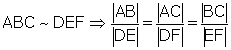
2. Açı – Açı Benzerlik Teoremi
Karşılıklı ikişer açıları eş olan üçgenler benzerdir.
| 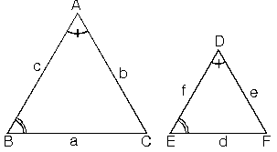 |
şekilde verilen üçgenlerde
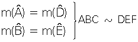
İkişer açıları eş olduğundan, üçüncü açıları da eş olmak zorundadır. Dolayısıyla bu iki üçgen benzer üçgenlerdir.
m(C)=m(F)
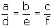
3. Kenar – Açı – Kenar Benzerlik Teoremi
İki üçgenin karşılıklı ikişer kenarı orantılı ve bu kenarların oluşturduğu karşılıklı açılar eş ise, üçgenler benzerdir.
| 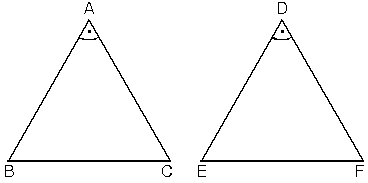 |
| 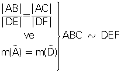 |
ABC üçgeni ile DEF üçgeninin BAC ve EDF açıları eş, bu açıların kenarları da orantılı ise, bu iki üçgen benzerdir.
BAC açısının kısa kenarının EDF açısının kısa kenarına oranı, BAC açısının uzun kenarının EDF açısının uzun kenarına oranına eşittir.
4. Kenar – Kenar – Kenar Benzerlik Teoremi
İki üçgenin karşılıklı bütün kenarları orantılı ise bu iki üçgen benzerdir.
| 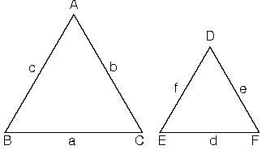 |
| 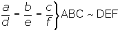 |
Kenarları orantılı olan ABC ve DEF benzer üçgenlerinde orantılı kenarları gören açılar eştir.
m(A) = m(D),
m(B) = m(E),
m(C) = m(F)
5. Temel Benzerlik Teoremi
| ABC üçgeninde [DE] // [BC] ise yöndeş açılar eşolacağından ADE ~ ABC dir.
|
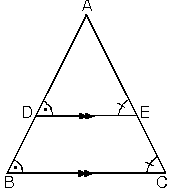 |
|
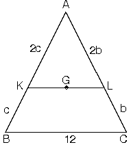 |
6. Tales Teoremi
| Paralel doğrular kendilerini kesen doğruları aynı orandabölerler. d1 // d2 // d3 doğruları için
Buradan 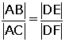 de elde edilir |
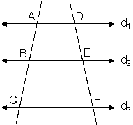 |
|
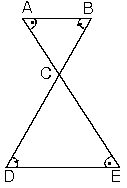 |
7. Benzerlik Özellikleri
Benzer üçgenlerin açıları karşılıklı olarak eş, diğer bütün elemanları orantılıdır.
| 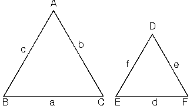 | |
| ABC ~ DEF Û | 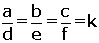 |
Burada k ya benzerlik oranı denir.
a. Benzer üçgenlerde orantılı kenarlara ait yüksekliklerin oranı benzerlik oranına eşittir.
|
b. Benzer üçgenlerde orantılı kenarlara ait kenar-ortay uzunluklarının oranı benzerlik oranına eşittir.
|
c. Benzer üçgenlerde eş açılara ait açıortay uzunluklarının oranı benzerlik oranına eşittir.
|
d. Benzer üçgenlerin çevrelerinin oranı benzerlik oranına eşittir.
|
e. ABC üçgeninde içteğet çemberin yarıçapı rABC ve çevrel çemberin yarıçapı RABC , DEF üçgeninde içteğet çemberin yarıçapı rDEF ve çevrel çemberin yarıçapı RDEF olsun.
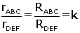
f. Alanlar oranı
Benzer üçgenlerin alanlarının oranı benzerlik oranının karesine eşittir.
| 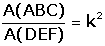 |
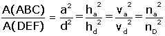
g. Benzerlik oranı k = 1 olan üçgenler eş üçgenlerdir.
|
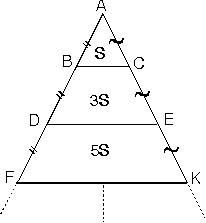 |
|
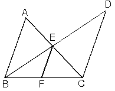 |
8. Özel Teoremler
a. Menelaüs
| ABC üçgeni KM doğru parçası ile şekildeki gibi kesiliyor ise
|
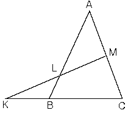 |
b. Seva
| ABC üçgeni içerisinde alınan bir P noktası için,
|
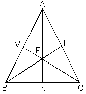 |